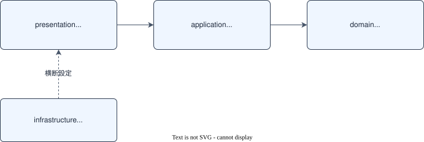

コーディング規約¶
BookFlow で開発するときの約束事をまとめたガイドです。技術選定の理由は各 ADR に、API、画面の仕様は Docs/spec/ に書かれています。
本書は「実装時に迷わないためのルールと実例」に絞っています。
最大の規約は「既存コードに合わせる」
本書に書かれていないことで迷ったら、同じ種類の既存ファイルを開いてパターンを真似るのが正解です。 ベース実装は ADR と本規約に沿って書かれているため、既存コードがそのまま生きた手本になります。
共通方針¶
| 項目 | ルール |
|---|---|
| ブランチ命名 | feature/<GitHubユーザー名>/<issue番号>-<short-desc>（例：feature/taro/42-resource-detail） |
| コミット | Conventional Commits 形式（詳細は§コミット・PR 規約） |
| 言語 | コメント・コミットメッセージ・ドキュメントは日本語で書いてよい（識別子は英語） |
| 仕様の扱い | Docs/spec/ が真実の源。仕様と実装が食い違ったら仕様を確認し、必要なら仕様の更新を先に行う |
同じ選択課題（カタログ項目）に複数の学習者が着手すると、各自が別の Issue を起票するため issue 番号自体は重複しません。ただし番号だけでは git branch -a や GitHub の branch 一覧から誰の作業か判別できないため、先頭に GitHub ユーザー名を入れて担当者を明示します。
ブランチは main から次のコマンドで作成します。
コミット前に必ず通すこと：フォーマッタとリンタを実行し、テストが green であることを確認してからコミットします。
フロントエンド（cd frontend） |
バックエンド（cd backend） |
|
|---|---|---|
| フォーマット | pnpm format |
./gradlew spotlessApply |
| Lint | pnpm lint |
./gradlew checkstyleMain |
| テスト | pnpm test |
./gradlew test |
フロントエンド規約¶
参照 ADR：001 pnpm / 002 Tailwind / 003 shadcn/ui / 004 データ取得 / 005 フォーム / 006 Zod / 007 Zustand / 008 Better Auth / 009 テスト / 010 oxlint/oxfmt
ディレクトリ責務¶
| ディレクトリ | 責務 |
|---|---|
src/app/ |
ページ・レイアウト（App Router）。認証必須ページは (authenticated)/ ルートグループ配下 |
src/components/ |
UI コンポーネント。ui/ は shadcn/ui 由来、layout/ はヘッダー等の共通レイアウト |
src/server/actions/ |
Server Actions（BFF 層）。バックエンド API 呼び出しはここに集約 |
src/lib/schemas/ |
Zod スキーマ定義（フォームバリデーション用） |
src/lib/ |
API クライアント・セッション・型定義・ユーティリティ |
設計原則¶
- Server Components 優先：
'use client'はインタラクションが必要な末端コンポーネントだけに付ける（ADR-004） - データ取得は Server Actions 経由：クライアントからバックエンド API を直接呼ばない。トークンはサーバーサイドに保持する
- クライアント状態は最小限：サーバー由来のデータをストアに複製しない。Zustand は UI 状態（モーダル開閉等）に限定する（ADR-007）
- 型は Zod スキーマから導出：手書きの型とスキーマの二重管理をしない（
z.infer<typeof XxxSchema>）
Server Actions のパターン¶
src/server/actions/resources.ts が手本です。
'use server'
import { createApiClient } from '@/lib/api-client'
import { ResourceResponseSchema, type ResourceResponse } from '@/lib/types/api'
import { getAccessToken } from '@/lib/session'
import type { CreateResourceInput } from '@/lib/schemas/resource'
/**
* リソースを登録する（ADMIN のみ）。
*/
export async function createResourceAction(input: CreateResourceInput): Promise<ResourceResponse> {
const client = createApiClient(getAccessToken)
return client.post('/resources', input, ResourceResponseSchema)
}
- ファイル冒頭に
'use server'、関数名はxxxActionで統一 - 各 Action に JSDoc で「何をするか・必要なロール」を書く
- レスポンスは Zod スキーマ（
@/lib/types/api）で検証してから返す
Zod スキーマは 'use server' ファイルに置けない
Next.js の制約により、'use server' ファイルからは非同期関数以外（Zod スキーマオブジェクト等）を export できません。
入力スキーマは src/lib/schemas/（例：src/lib/schemas/resource.ts）に分離し、Action 側では z.infer で導出した型のみをインポートしたうえで再エクスポートします。
命名規則¶
| 対象 | 規則 | 例 |
|---|---|---|
| コンポーネントファイル | PascalCase | Header.tsx・ResourceManagementClient.tsx |
| それ以外のモジュール | kebab-case | api-client.ts・dev-auth.ts |
| 関数・変数 | camelCase（Server Action は xxxAction） |
listResourcesAction |
| Zod スキーマ | XxxSchema + 型は XxxInput / XxxResponse |
CreateResourceSchema → CreateResourceInput |
| ルーティング | App Router 規約に従う | app/(authenticated)/resources/page.tsx |
Lint / Format（oxlint + oxfmt）¶
設定は frontend/oxlint.json です。react / nextjs / typescript プラグインを有効化し、no-unused-vars はエラー、no-console は警告です。
デバッグ用の console.log は残さないでください。
インポートパスはエイリアス @/（= src/）を使います（tsconfig は strict モード）。
バックエンド規約¶
参照 ADR：011 Gradle / 012 Spring Data JPA / 013 Flyway / 014 バリデーション / 015 OpenAPI / 016 認証 / 017 ロギング / 018 テスト / 019 コード品質
4 層アーキテクチャ（厳守）¶
com.example.bookflow 配下は 4 つのレイヤーに分かれ、依存は一方向です。

| レイヤー | 置くもの | 置かないもの |
|---|---|---|
domain/ |
Entity・Enum・Repository インターフェース | HTTP・DTO への依存 |
application/ |
ユースケース Service・業務例外（exception/） |
Controller・HttpServletRequest 等 |
presentation/ |
Controller・DTO（dto/）・GlobalExceptionHandler |
業務ロジック |
infrastructure/ |
Spring 設定（config/）・セキュリティ（security/） |
業務ロジック |
下のレイヤーから上のレイヤーを参照するわけにはいきません（domain が presentation の DTO を import したら違反）。
クラス命名・配置¶
| 種類 | 命名 | 例（実ファイル） |
|---|---|---|
| Entity | 名詞そのまま | domain/Resource.java |
| Repository | XxxRepository（interface） |
domain/ResourceRepository.java |
| Service | XxxService |
application/ResourceService.java |
| 業務例外 | XxxException |
application/exception/ResourceNotFoundException.java |
| Controller | XxxController |
presentation/ResourceController.java |
| DTO | XxxRequest / XxxResponse（record） |
presentation/dto/CreateResourceRequest.java |
DTO は record + from() ファクトリ¶
レスポンス DTO は record で定義し、Entity からの変換は static ファクトリ from() に集約します（presentation/dto/ResourceResponse.java）。
public record ResourceResponse(
UUID id, String name, String category, /* ... */ LocalDateTime createdAt) {
public static ResourceResponse from(Resource resource) {
return new ResourceResponse(
resource.getId(), resource.getName(), resource.getCategory().name(), /* ... */);
}
}
リクエスト DTO には Jakarta Bean Validation アノテーション（@NotBlank、@Size 等）を付け、Controller で @Valid を指定します（ADR-014）。エラーメッセージは日本語で書きます。
例外処理¶
- 業務エラーは
application/exception/のカスタム例外（BusinessException・ResourceNotFoundException等）を throw する - HTTP ステータスへの変換は
presentation/exception/GlobalExceptionHandler（@RestControllerAdvice）に一元化する。Controller / Service で try-catch して独自レスポンスを作らない - エラーコードは
application/exception/ErrorCode.javaの定数を使う。ステータス・エラーコードの対応は api-spec.md §共通が正
データアクセス・マイグレーション¶
- クエリは Spring Data JPA の派生クエリまたは JPQL（
@Query）で書く。生 SQL（ネイティブクエリ）は原則禁止（ADR-012） - 関連のフェッチは
FetchType.LAZYをデフォルトとし、N+1 が出る場合はJOIN FETCHで対処する - スキーマ変更は Flyway マイグレーションで行う。ファイル名は
V<3桁連番>__<snake_case>.sql（例：V002__add_resource_image.sql）。コミット済みのマイグレーションファイルは変更禁止（ADR-013）
ログ¶
SLF4J の Logger を使います（private static final Logger LOG = LoggerFactory.getLogger(Xxx.class);）。System.out.println の使用は禁止です。
出力形式はプロファイルで切り替わるため（ADR-017）、コード側は形式を意識しなくて構いません。
Format / Lint（Spotless + Checkstyle）¶
| ツール | 役割 | 主なルール |
|---|---|---|
Spotless（spotlessApply） |
自動フォーマット | google-java-format 1.28.0・未使用 import 削除 |
Checkstyle（checkstyleMain） |
規約チェック | スター import 禁止・命名（クラス PascalCase / メソッド camelCase / 定数 UPPER_SNAKE_CASE）・メソッド 150 行以内・引数 7 個以内 |
設定ファイルは backend/build.gradle.kts と backend/config/checkstyle/checkstyle.xml です。
コミット・PR 規約¶
Conventional Commits¶
コミットメッセージは <type>: <変更内容の要約> 形式で書きます。
| type | 用途 |
|---|---|
feat |
機能追加 |
fix |
バグ修正 |
docs |
ドキュメントのみの変更 |
refactor |
動作を変えないコード整理 |
test |
テストの追加・修正 |
chore |
ビルド設定・依存更新等 |
コミットの粒度¶
1 コミット 1 関心事が原則です。「機能追加」と「無関係なリファクタ」が混ざっていたら分割してください。
レビュアー（メンター）がコミット単位で差分を追える状態が目標です。
PR 提出前のセルフレビュー¶
- §共通方針のフォーマット・Lint・テストをすべて通した
- 仕様（
Docs/spec/）と実装が一致している（仕様にない挙動を勝手に追加していない） - AI が生成したコードを自分で読み、説明できる状態になっている（→ ai-tools-guide.md §AI 利用ポリシー）
- 動作確認の手順と結果を PR に書ける状態になっている
テスト規約¶
参照 ADR：009 FE テスト戦略 / 018 BE テスト戦略
| フロントエンド | バックエンド | |
|---|---|---|
| ユニットテスト | Vitest（tests/unit/） |
JUnit 5 + Mockito（src/test/java/） |
| API モック | MSW（tests/unit/msw/handlers.ts に一元管理） |
Mockito の @Mock |
| 統合 / E2E | Playwright（tests/e2e/） |
H2 in-memory（PostgreSQL 互換モード・Flyway 無効） |
| ファイル命名 | <対象>.test.ts（テスト対象とディレクトリ構造を合わせる） |
<対象クラス>Test.java（同一パッケージ） |
| テスト名 | describe = 関数名、it = 日本語で「条件: 期待結果」 |
methodName_condition_expectedBehavior |
| 実行 | pnpm test / pnpm test:e2e |
./gradlew test |
フロントエンドの実例¶
tests/unit/server/actions/resources.test.ts が手本です。MSW のデフォルトハンドラは tests/unit/msw/handlers.ts に定義し、異常系はテスト内で server.use() で上書きします。
describe('listResourcesAction', () => {
it('正常時: リソース一覧をページネーション形式で返す', async () => {
const result = await listResourcesAction()
expect(result.totalElements).toBe(1)
})
it('401 時: ApiClientError をスローする', async () => {
server.use(
http.get('/api/backend/resources', () => HttpResponse.json(null, { status: 401 })),
)
// ...
})
})
バックエンドの実例¶
Service の単体テストは application/ResourceServiceTest.java が手本です（Mockito で Repository をモック）。
@ExtendWith(MockitoExtension.class)
class ResourceServiceTest {
@Mock private ResourceRepository resourceRepository;
@InjectMocks private ResourceService resourceService;
@Test
void list_withAvailabilityFilter_returnsNonOccupiedResources() {
// ...
}
}
Controller テストで認証ユーザーが必要な場合は、src/test/java/.../support/ のカスタムアノテーション @WithMockMember / @WithMockAdmin を使います（ADR-016 の DEVIATION 参照）。
カバレッジの考え方¶
カバレッジの数値基準は設けていません。
その代わり、新規に追加または変更したコードには必ず対応するテストを付けること、既存テストを green に保つことを必須とします。
テスト作成は AI の得意分野
既存テストファイルを参照させたうえで Claude Code に生成させると、命名規約、モックパターンに沿ったテストの叩き台が得られます（→ ai-tools-guide.md）。
生成後は必ず実行して検証してください。